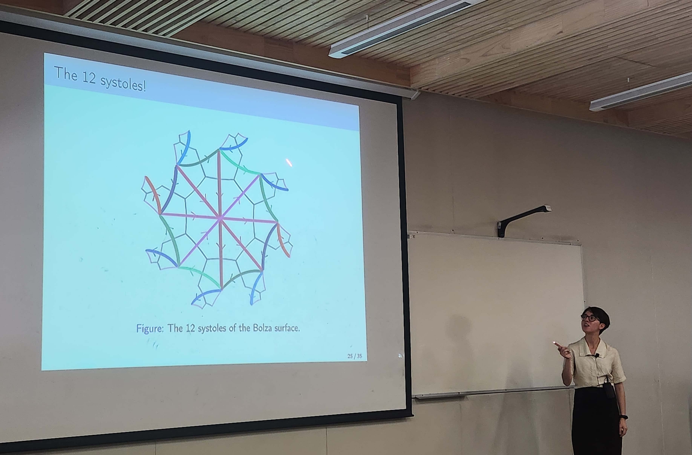

Camila Guajardo Vásquez
PhD student
Department of Mathematical Engineering
Universidad de Chile
You may find my full CV here.
Research interests
Geometric topology, geometric analysis, geometry of Riemann surfaces.
Recent

I earned my MSc in Mathematics from Universidad de Chile in 2026, under the supervision of Professor Anita Rojas.
In my thesis, I reimplemented a computational routine to obtain systolic bounds on genus-two surfaces from an abstract group action.
GitHub repository soon!